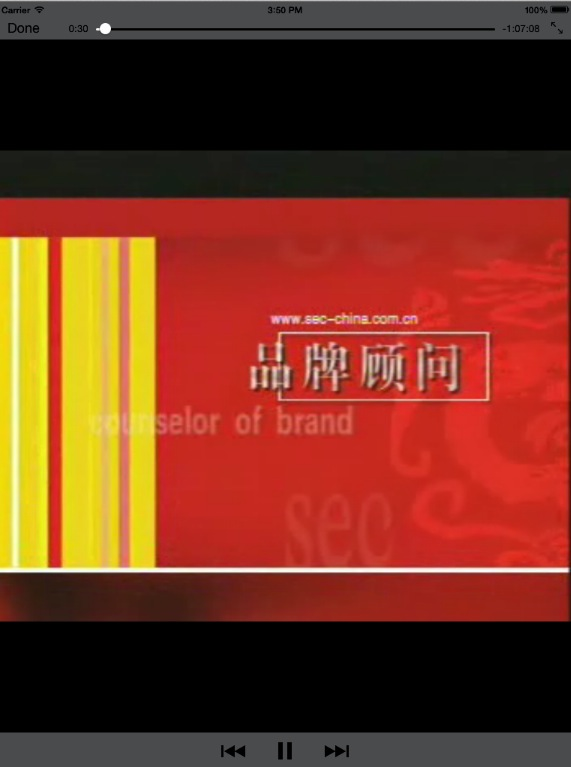
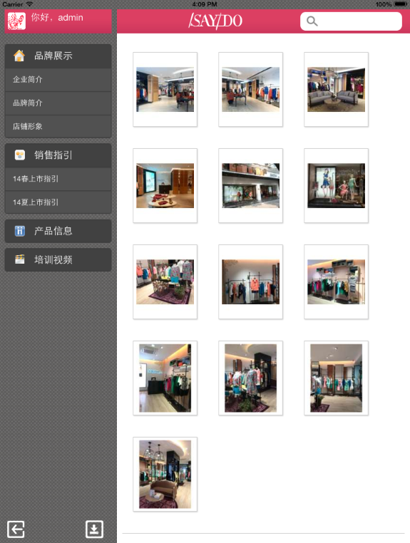
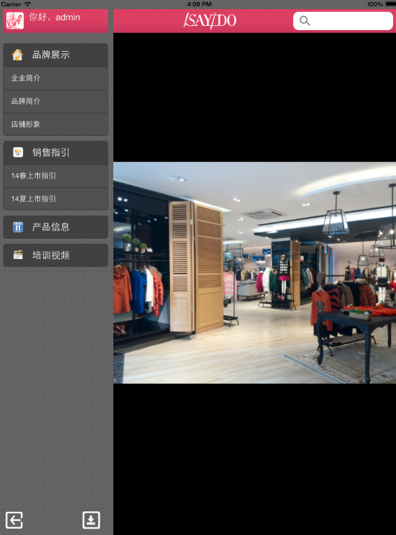
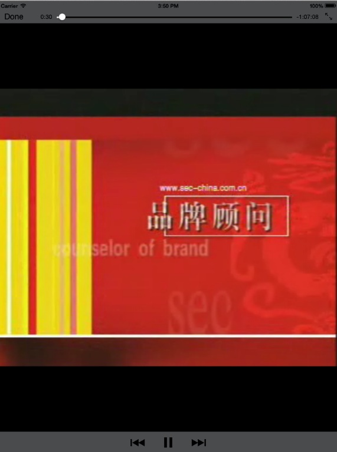
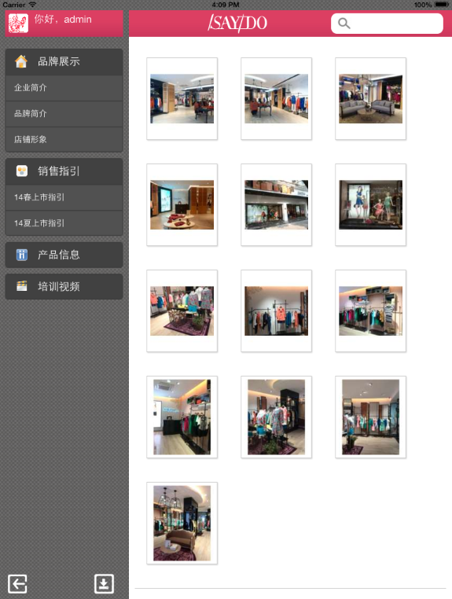
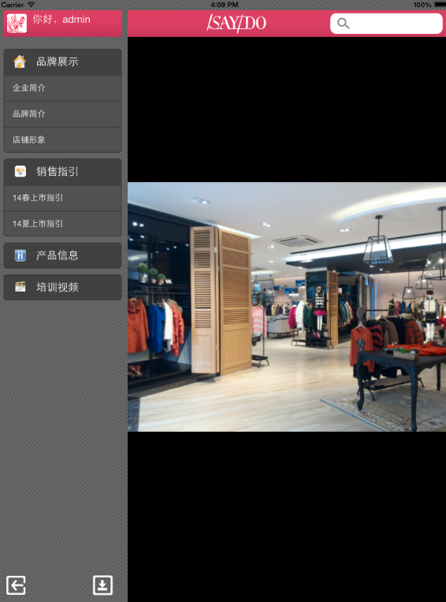
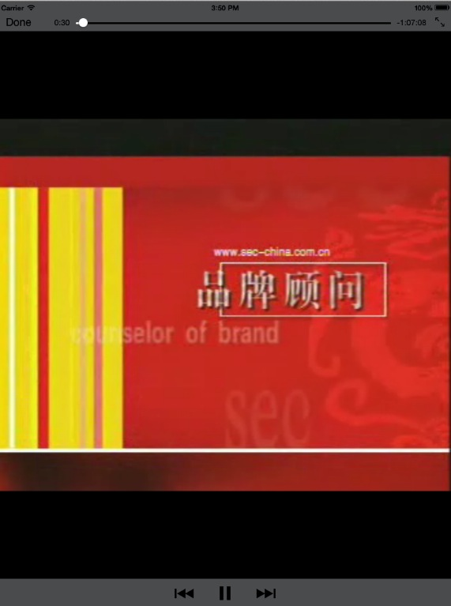
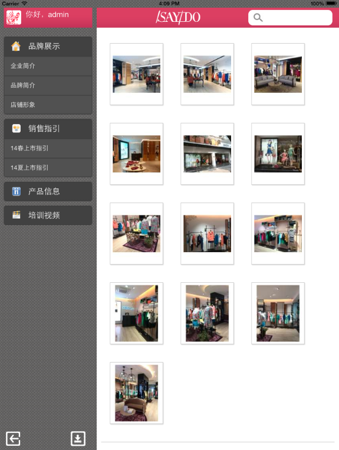
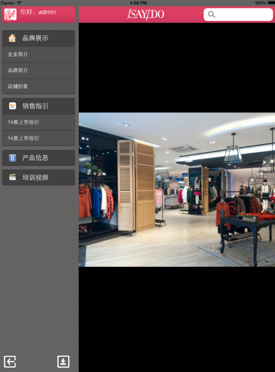

为温州新派服饰集团开发的iPad App应用。
主要功能：在ipad上实现文件、视频、图片、文档的下载及浏览，并有后台对文件进行管理。
技术方案：后端使用PHP+easyui开发，前端app基于phonegap混合开发，主要使用Angular.js框架作为核心库，UI层使用Bootstrap框架。photoswipe.js和video.js分别作为图片和视频的浏览控件等。


